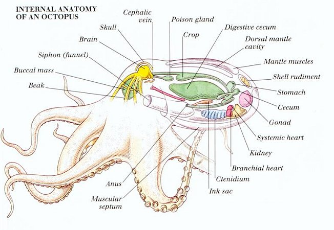
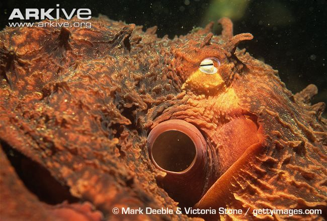
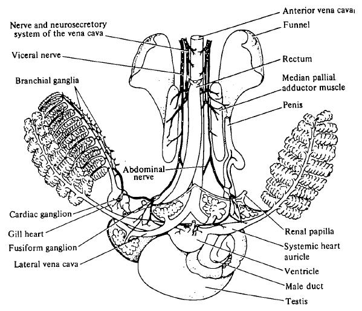

Octopuses are extremely intelligent. They have been known to
solve complex problems in captivity.
They play with toys and
are great escape artists.
They can recognize particular people
and display emotions, such as anger.
Octopuses have three hearts, eight arms, suckers on their arms, a highly developed central nervous system, a beak, and a siphon.
The siphon is used for movement, to shoot ink, and to draw water over the octopus's gills to breathe.
Two of the octopus's hearts pump blood to their gills, while the third handles pumping blood to the rest of the body.

The octopus has arms, not tentacles!
Each arm is covered with
very sensitive suckers that send tactile and taste information
back to the brain.
The octopus can feel and taste with his suckers!
Want to learn more? Here's where I got my info:
The Giant Pacific Octopus by Julie Kalupa
from the University of Wisconsin - La Crosse